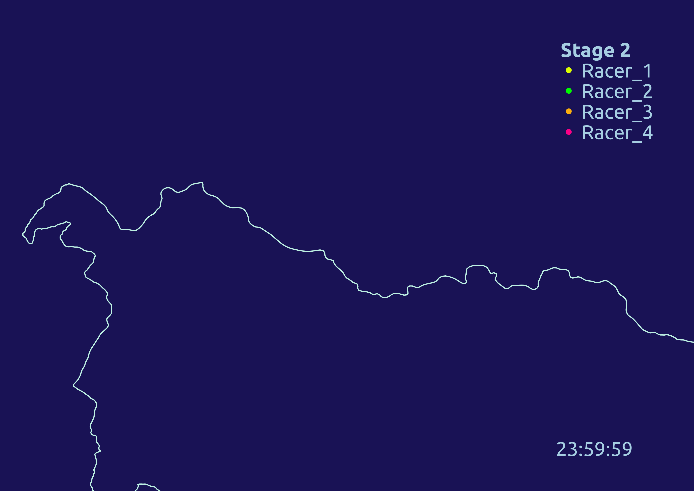

GIS Professional
A website dedicated to showcasing my geospatial skills. At the moment it's a bit bare-bones, but stay-tuned!
Pretty soon it will be full of eye-popping maps and cool visualizations.
Interactive basemap created using Folium/Leaflet and OpenStreetMap.
A MTB Enduro race animation created using Strava GPX tracks, QGIS and GIMP.

I was first introduced to GIS through my undergraduate classes in Geology. We were required to
take a GIS course, and I immediately fell in love and decided to minor in it. This is where I learned all
of my fundamental cartography skills. My old Weebly portfolio demonstrates some of these
foundational skills. The home page of the website is deprecated, so here is a list of
links to the good stuff - the maps!
Historical GISRemote Sensing
GPS
Hydrological Modeling
Advanced Statistical Analysis
Final Project
Final Web Map Series